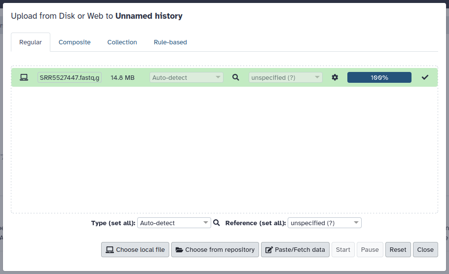
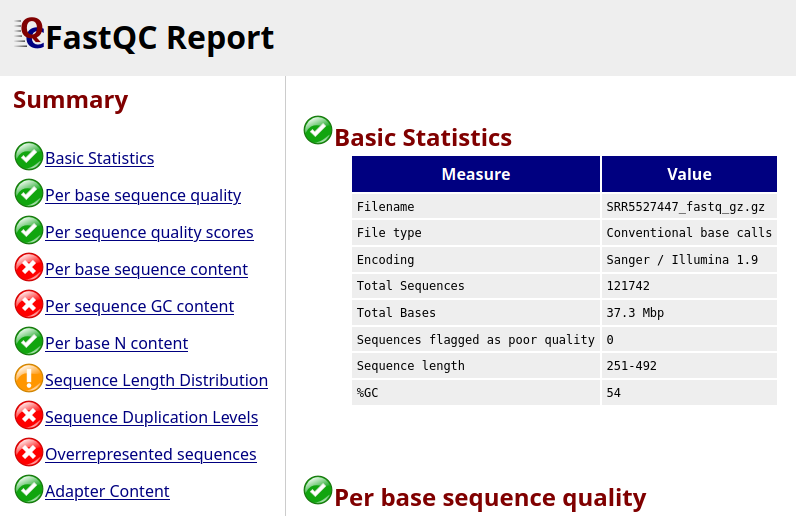
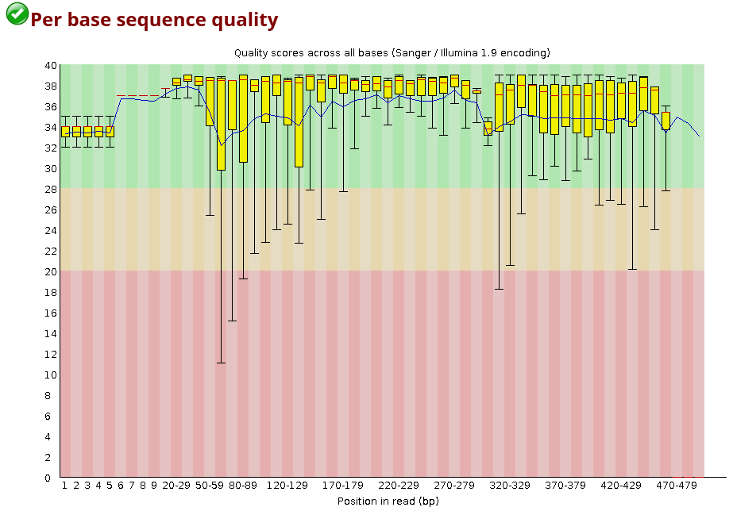
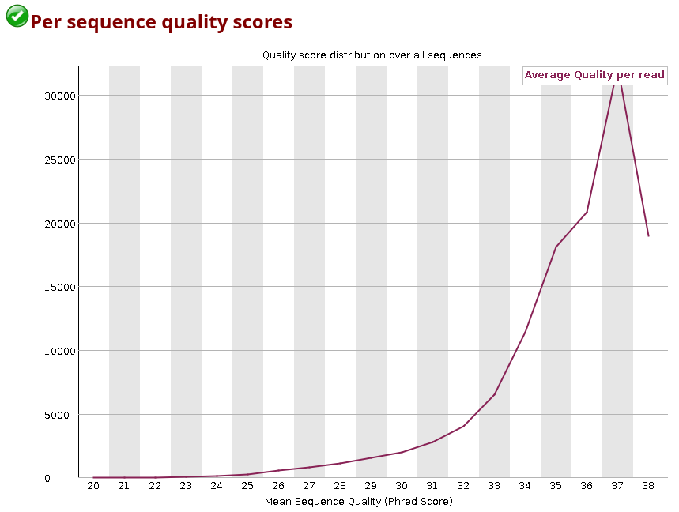
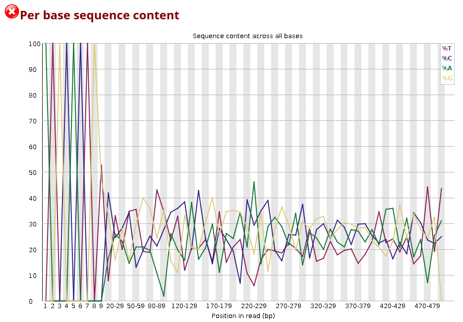
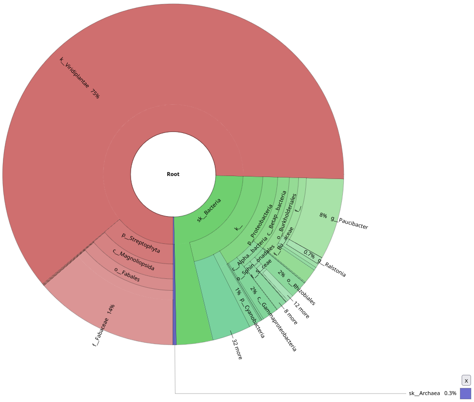
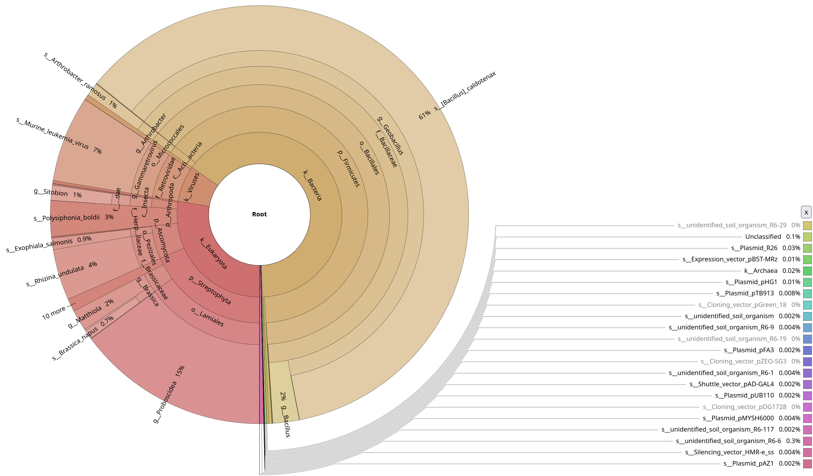
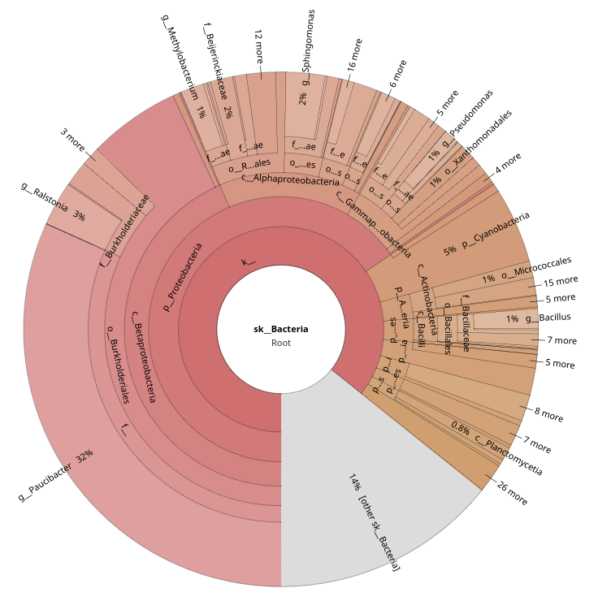

Amplicon practical
![]()
Learning Objectives
What does an amplicon sample contain?
What does it look like?
What is the scope of amplicon analyses?
What is the impact of using different tools?
Download an amplicon sample
https://www.ebi.ac.uk/ena/browser/view/SRR5527446 –> download selected files. We will focus on a sample from oilseed rape seeds.
What is galaxy
https://usegalaxy.org/
Create an account (give students 5 minutes)
Log-in to your account.
Upload the amplicon sample you downloaded.

FastQC
Look up FastQC in the list of tools
Fastq files contain the raw sequence returned by the sequencer, including quality values associated to every base pair.
FastQC returns two types of outputs: a raw file and a pre-made html file containing multiple graphs with information about the sequence. Download that file, extract it, and open it in your browser of preference.

Per base sequence quality is quite decent for all reads in the sample.

For each position, a BoxWhisker-type plot is drawn:
- The central red line is the median value.
- The yellow box represents the inter-quartile range (25-75%).
- The upper and lower whiskers represent the 10% and 90% points.
- The blue line represents the mean quality.
The y-axis on the graph shows the quality scores. The higher the score, the better the base call. The background of the graph divides the y-axis into very good quality calls (green), calls of reasonable quality (orange), and calls of poor quality (red).
You can also look up the distribution of the average quality per read in the sample

You can observe how the distribution of amplicon bases is much more scattered compared to a metagenomic samples. This is usually because amplicon sequencing targets specific regions, leading to a higher chance to the same base position containing the same base.

The DNA composition looks very even until nucleotide ~10, and after that, there are distinct differences. Why do you think that is?
The first bases in this sample are primer sequence. In amplicon libraries, all reads start at (nearly) the same position because PCR primers define the amplicon boundaries. This means that the same primer sequence (or its reverse complement) is present at the start of almost every read, leading to a highly uniform per-base sequence content. After nucleotide ~10, the biological target sequence begins.
There are a few other summaries in this report you can look into. You may notice that a few of these summaries are labelled as failed (red cross), but this is not an error for amplicon sequences, as we are mostly targeting repeated sequences, and duplication/GC content expectations differ a lot from what a metagenomic sample would yield.
Performing taxonomic annotation of your amplicon data
In the following section we will compare results from two different tools that we will launch on your amplicon data: Kraken2 and MAPseq. You will observe how the choice in tool and reference database can change results drastically.
This step is needed to proceed with downstream analyses. Fasta files are fastq files deprived of their quality values.
Look up FASTQ to FASTA in the list of tools
Analyses names can be a bit confusing in galaxy - to remember which files you are suppoed to use in downstream anallyses it is recommended to rename them by pressing the pencil symbol on the analysis, and then editing the Name to something you’ll remember easily.
MAPseq
Look up MAPseq in the list of tools
Let’s select the SSU database, as this was the targeted subunit, and default parameters.
Separately we decided to run LSU and ITS databases, but the yield was very low, as expected.
Among the available options, there is the possibility of creating a table suitable for krona plot generation. This will be used later for a visual observation of your dataset.
Kraken2
CHECK WHAT IS THE FASTEST, SILVA 138 16S or SILVA 2022
25: 2022-02-02T162959Z_silva_kmer-len_35_minimizer-len_31_minimizer-spaces_6_load-factor_0.7
26: 16S_SILVA138_k2db2021-08
Look up Kraken2 in the list of tools, let’s launch it with a default set of parameters, but only allowing for the best hit to be used. In a separate session you could change these parameters and aim for better accuracy, bearing in mind that execution time might increase.
Kraken-report + Krakentools
A few more steps are required for kraken data to be converted to a format ingestable in a krona plot.
First, select ‘Kraken-report’ from the list of tools, and give it the Kraken classification file as input. The tool will only run for a few seconds. Do the same with ’ Krakentools: Convert kraken report file to krona text file’ by giving it the file ‘Kraken-report’ just generated.
Krona pie chart
Use both tabular files that have been generated by MAPseq and Kraken2 as input files. This tool will generate a separate plot for each dataset.
Kraken2 vs MAPseq comparison
Open the two krona plots you just generated. They should look like these two:


Look at the difference in annotation numbers.
Notice the contamination on MAPseq’s output. Thinking about the parameters that we used, do you understand why this was picked up by MAPseq, but not by Kraken2?
Kraken2 was only focused on a bacterial database, while we used a generic SSU database for MAPseq. Also this shows probably how much contamination there was in the initil sample, underlying how important it is to decontaminate your sample beforehand.
Let’s focus on the bacterial annotations only.
